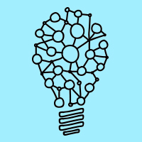
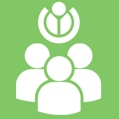
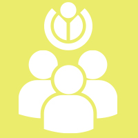
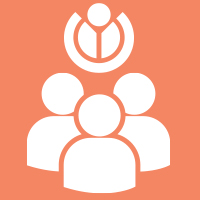

Alur Waktu Besut Kode
Berikut adalah alur waktu pelaksanaan kompetisi Besut Kode
-

27 Juni 2016
Pendaftaran Besut Kode Dibuka
Wikimedia akan mengakomodasi 500 pendaftar BesutKode tingkat SMA dari berbagai lokasi di Indonesia. Gelombang I (27 Juni - 20 Juli) Gelombang II (21 Juli - 20 Agustus) Gelombang III (21 Agustus - 20 September)
-

30 Juli 2016
Lokakarya I
-

27 Agustus 2016
Lokakarya II
Pendaftaran Gelombang II (21 Juli - 20 Agustus) ditutup. Satu bulan setelah pendafataran Gelombang II dibuka Wikimedia akan menyelenggarakan Pertemuan II (lokasi ditentukan kemudian) untuk seluruh peserta yang berhasil menyelesaikan modul 1-5 untuk datang dan menerima pengarahan mengenai kolaborasi dan tahapan selanjutnya (modul 6). Sementara peserta Gelombang I yang lolos, akan mendalami mentoring intensif daring (online) dan penilaian untuk lolos/ gugur.
-

25 September 2016
Lokakarya III dan Mentoring Intensif
Pendaftaran Gelombang III (21 Agustus - 20 September) ditutup. Periode ini adalah gelombang terakhir Kompetisi "Besut Kode" untuk SMA (HABIS). Seperti peserta gelombang sebelumnya, peserta Gelombang III (akhir) memiliki satu bulan setelah mendaftar (21 Agustus - 20 September) dan menyelesaikan modul 1 - 5. Peserta yang berhasil akan bergabung dengan peserta yang lolos dari gelombang sebelumnya. Peserta tahap SMA yang lolos dan bersedia akan menerima pemantapan untuk diikut sertakan dalam Google CodeIn
-
29 Oktober 2016
Penyerahan Sertifikat & Hadiah
Penganugrahan lima komputer jinjing, sertifikat, dan pengumuman peserta yang lolos magang berbayar di Wikimedia Indonesia selama satu tahun.
-

Google Code-in &Google Summer of Code
Beberapa peserta terpilih BesutKode akan diikutkan dalam kompetisi Google Code-in atau Google Summer of Code 2017 (tergantung waktu penyelenggaraan oleh Google)
Blog Besut Kode
Blog Terbaru
Pertanyaan Umum
Berikut adalah beberapa pertanyaan umum kompetisi Besut Kode